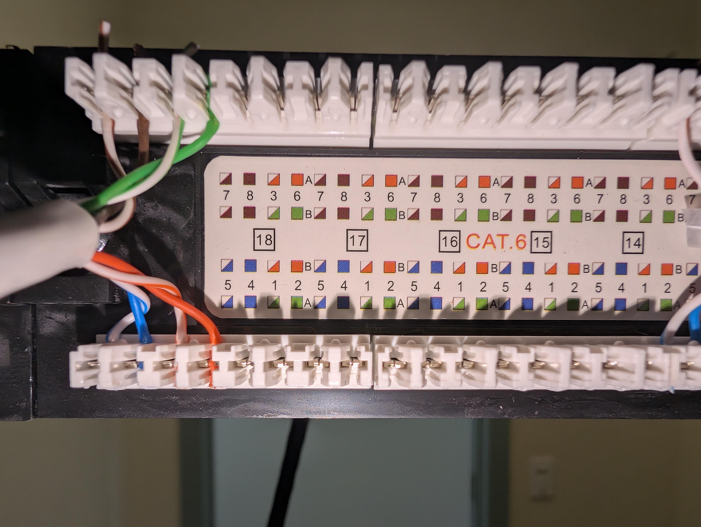
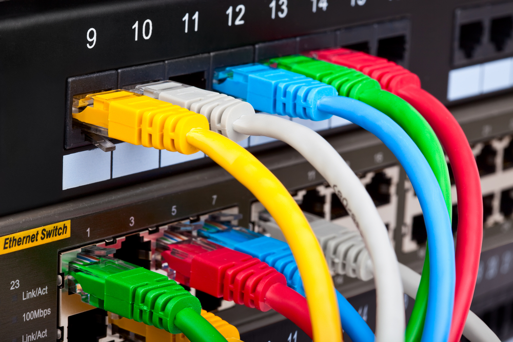
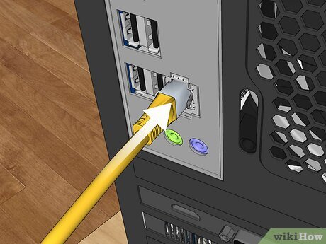

🖥️ Laboratory Network Infrastructure Topology
Follow this absolute step-by-step structural procedure to correctly align and deploy the network architecture loop.
Provisioning Tools & Cables
Gather your deployment toolkit: two or three network cables, a punch-down tool, and a modular crimping tool. If you do not have pre-fabricated cords, manually fabricate straight-through cables using either the T568A or T568B standard sequence.

Workstation Tower to Patch Panel
Strip the outer jacket off one end of the first cable and terminate it into the rear matrix of a patch panel keystone jack using your punch-down tool. Crimp an RJ45 connector onto the opposite end. Both ends must match in pinout standard (if the RJ45 end uses T568A, the punch-down jack must follow T568A guidelines printed on the module). Plug the RJ45 end into the System Unit NIC port.

Patch Panel to Network Switch
Deploy your second cable, which requires dual RJ45 connector ends. Plug one end into the designated front patch panel port corresponding to your horizontal workstation link, then route the opposite end directly into the matching port assignment interface on your localized Network Switch.

Network Switch to Core Router
Use your third dual-RJ45 cable to create an uplink patch between an open port on the network switch and the LAN/Internal interface gateway port on your Core Router. Every single cable in this structural pipeline must share the exact same configuration profile (all T568A or all T568B).

Diagnostic Verification & Loop Testing
Power up the system and run validation checks. With the first cable plugged securely into the PC system unit, check the Network Switch LED indicator arrays. A solid or blinking activity light confirms physical layer continuity. Finally, inspect the operating system connection status UI to confirm active data transport.
